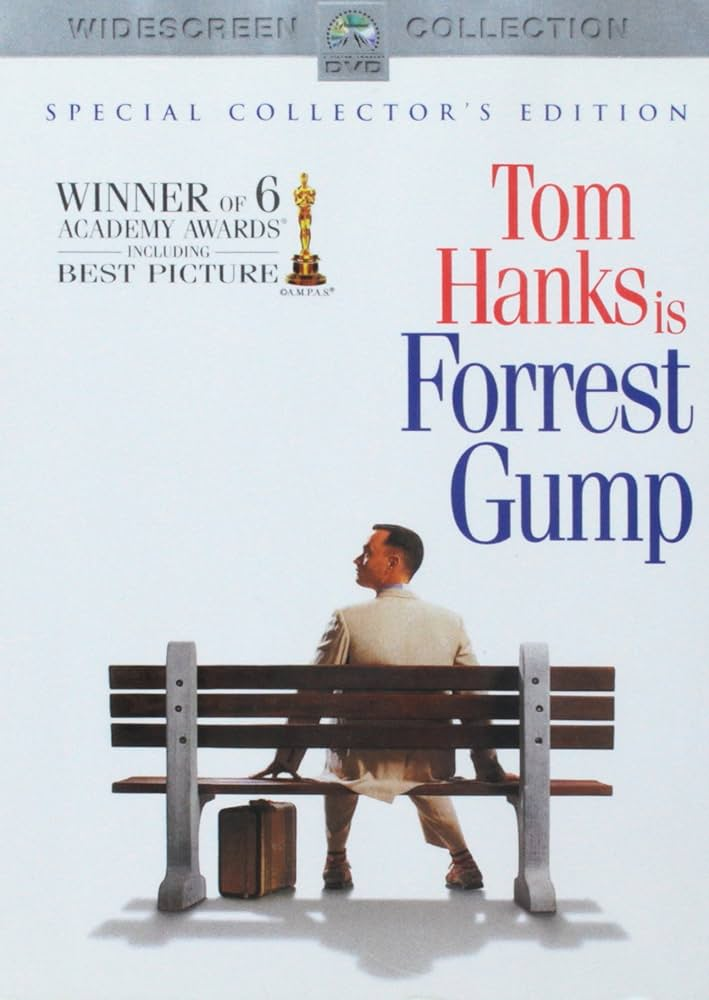
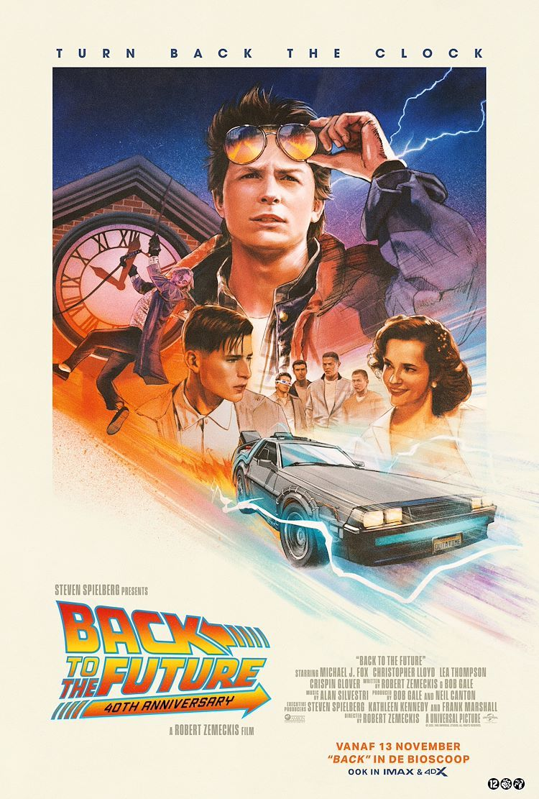
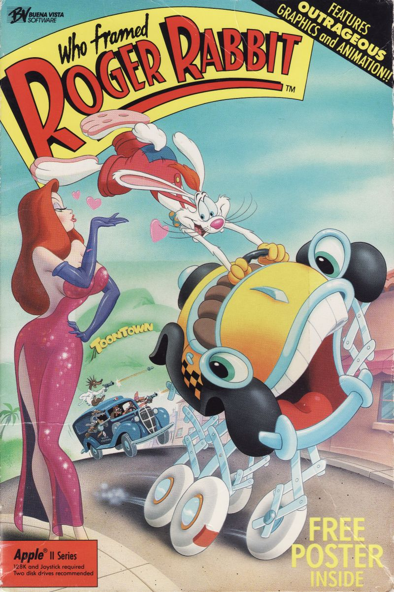
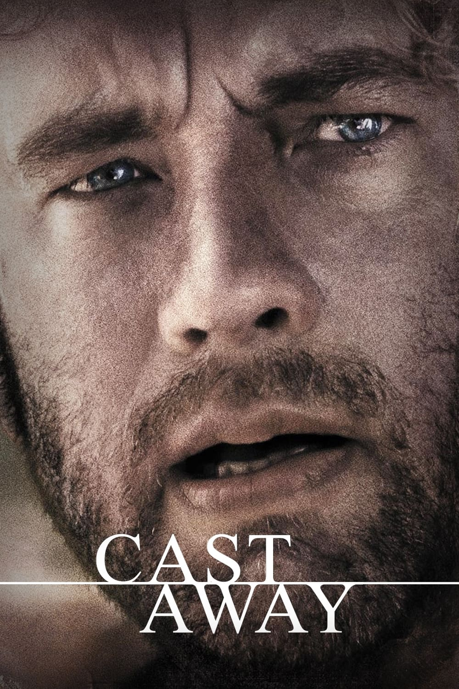

Año: 1994
Duración: 2h 22min
Puntuación: 8,8 / 10
Sinopsis: Las presidencias de Kennedy y Johnson, los acontecimientos de Vietnam, el Watergate y otros eventos históricos se desarrollan a través de la perspectiva de un hombre de Alabama con un coeficiente intelectual de 75.
Estrellas: Tom Hanks, Robin Wright, Gary Sinise
Anécdota: Ante el alto coste de ciertas escenas, como cuando Forrest corre por el país, Tom Hanks y el director Robert Zemeckis pagaron de su propio bolsillo algunas tomas al negarse el estudio a financiarlas.
Premios: Ganó 6 premios Óscar, 51 premios y 74 nominaciones en total.

Año: 1985
Duración: 1h 56min
Puntuación: 8,5 / 10
Sinopsis: Marty McFly, un estudiante de secundaria de 17 años, es enviado accidentalmente treinta años al pasado en un DeLorean que viaja en el tiempo, inventado por su gran amigo, el excéntrico científico Doc Brown.
Estrellas: Michael J. Fox, Christopher Lloyd, Lea Thompson
Anécdota: Michael J. Fox insistió en tocar la guitarra de verdad en la escena de "Johnny B. Goode", a pesar de que el equipo prefería que solo hiciera mímica.
Premios: Ganó 1 premio Óscar, 25 premios y 27 nominaciones.

Año: 1988
Duración: 1h 44min
Puntuación: 7,7 / 10
Sinopsis: Un detective que odia a los dibus debe defender al conejo animado más popular cuando este es acusado de un crimen que jura no haber cometido.
Estrellas: Bob Hoskins, Christopher Lloyd, Joanna Cassidy
Anécdota: Bob Hoskins (Eddie Valiant) tuvo que filmar casi todas sus escenas interactuando con muñecos, varillas o directamente al vacío para simular la presencia de los "Toons", lo que le provocó alucinaciones tras el rodaje.
Premios: Ganó 3 premios Óscar, 25 premios y 22 nominaciones en total.

Año: 2000
Duración: 2h 23min
Puntuación: 7,8 / 10
Sinopsis: Un ejecutivo de FedEx debe transformarse física y emocionalmente para sobrevivir a un aterrizaje forzoso en una isla desierta.
Estrellas: Tom Hanks, Helen Hunt, Paul Sanchez
Anécdota: La famosa pelota "Wilson" surgió casi por accidente. El guionista, buscando inspiración, pasó días solo en una playa de México y encontró un balón de voleibol que arrastró el mar, comenzando a hablarle para mantener la cordura.
Premios: Nominado a 2 premios Óscar, 15 premios y 36 nominaciones en total.